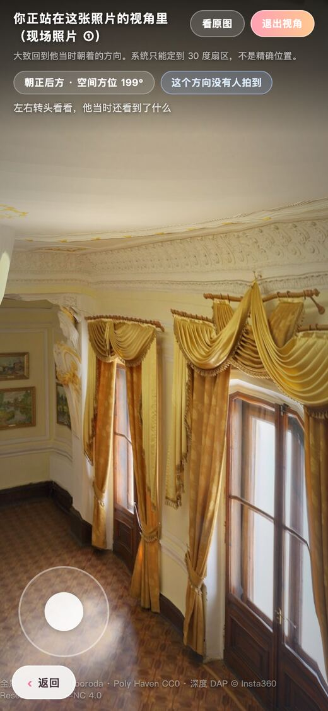
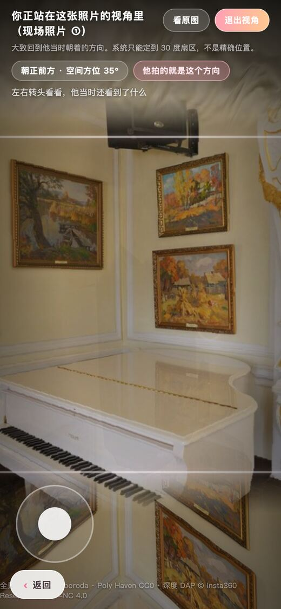
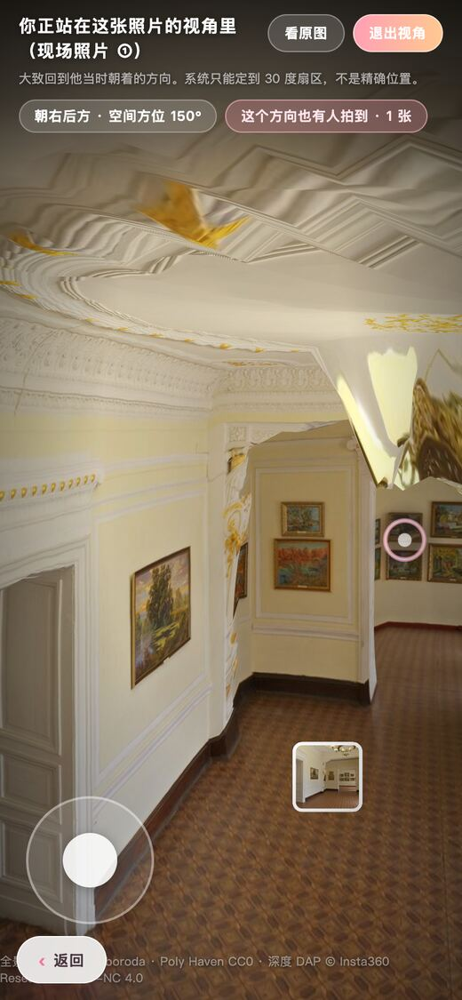
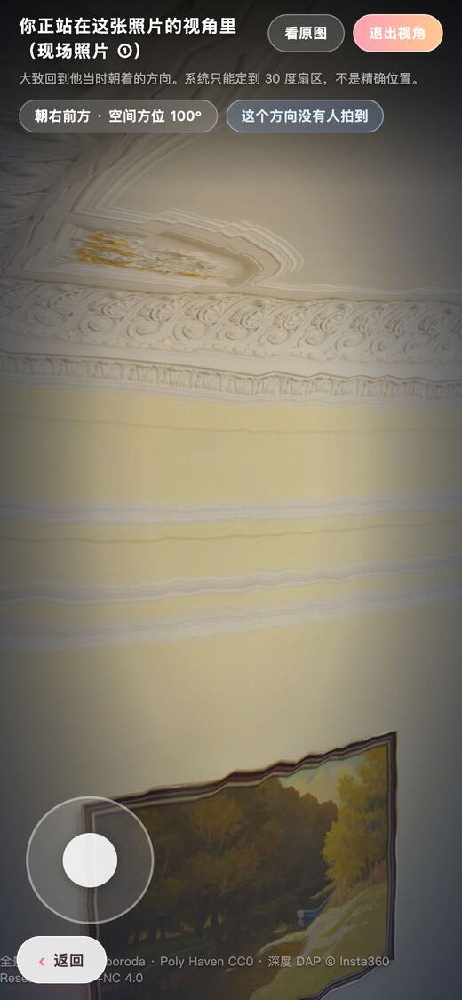
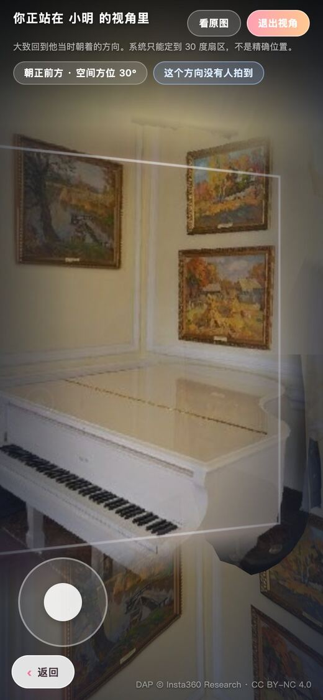
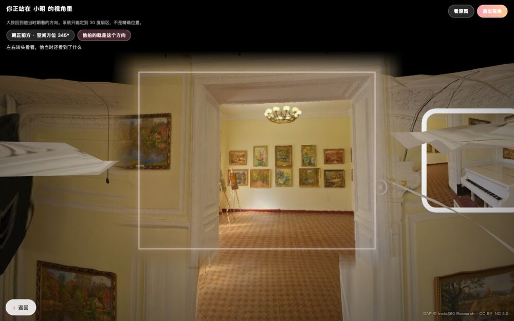

相机自己转过去
点中相框以后，相机用 1.15 秒转向那个方向，同时沿这个方向推近 0.45 米。这一秒里环视和走动都会被吃掉，免得你和动画抢方向盘。

飞行中间帧，方位还在扫，照片还没长出来
「回到 TA 的视角」答的是后半截：那一刻，那个地方，每个人分别朝着哪个方向在看，还有哪个方向一个人都没拍到。
它不是把照片放大。放大的照片会跟着你的屏幕走，这里的照片钉在空间里，你转头它留在原地。
点中相框以后，相机用 1.15 秒转向那个方向，同时沿这个方向推近 0.45 米。这一秒里环视和走动都会被吃掉，免得你和动画抢方向盘。

飞行中间帧，方位还在扫，照片还没长出来
到位后照片铺开盖住那一块，四边羽化，留 5% 不透明度让底下的全景透出来，提示这是叠加不是替换。落地方位 35 度，正好等于这张照片的角度。

标签：他拍的就是这个方向 · 空间方位 35°
照片钉在世界里不跟着转。实测在 5 个不同朝向读这张照片平面的坐标，恒等于 [1.57, 1.28, -2.24]，一位都没变。转到有人拍过的方向标签会报张数，转到空的方向压一层冷色暗角。


左：150° 也有人拍到 · 右：100° 没有人拍到
照片按假设的 70 度视场铺开，但「这个方向有没有人拍过」只按扇区中点前后 20 度算，合 40 度宽。盖住的宽度是判定宽度的将近两倍，中间那段差值就是说错话的地方。

示例空间 s4，进入小明那张照片当时朝着的方向，再转到方位 30 度
没有从 EXIF 反推焦段，不知道拍的人当时用的什么设备什么镜头，代码里就写死了一个 70 度。改这个数只会让照片铺得更宽或更窄，不参与任何判定，但它确实是个假设。
方向本身也只有 30 度一格、一共 12 格，这是系统现在的天花板。照片钉在扇区正中间，所以「误差半格」是结构上必然的，不是精度好。
演示空间一共 3 张照片，角度是 35、150、265。站在 35 度那张的视角里转到 10 度，标签写「也有人拍到 · 1 张」，那 1 张就是你正站着的这张，旁边并没有别人。
原因是「你自己那格」和「有没有人拍过」两处用了不一样的归格方式。真实空间的照片角度都落在格子正中，暂时不会撞上，所以演示时别去点顶部那排切场景的按钮。
照片盖上去以后，内容和它底下的背景本来就一样，只是亮一点、边上多一圈白框。手机竖屏更吃亏：相机横向视场只有 39 度（390×844 实测），照片却铺了 70 度，横向整个溢出屏幕，你只看得见照片中间那一块。桌面 1280×860 横向视场 97.6 度，白框的边能露出来，同一个功能在两种屏上是两种观感。

桌面上白框读得出来，这才是「他拍到的那一块」该有的样子
截图里那句「你正站在 X 的视角里」，「站」字用过了。系统不知道 TA 站在哪，落点是从你当前位置沿那个方向推 0.45 米，跟 TA 的真实机位没有关系。看到请当成「朝着 TA 当时朝的方向」。
另外功能名叫「回到 TA 的视角」，正文里却一律是「他」，女性贡献者也是「他」。两处都还没改。
还有一处顺带说破：上面第 01 步那张飞行中间帧里，顶上已经写着「你正站在这张照片的视角里」，其实这一刻相机还在半路上。这行字是进入的瞬间就挂上去的，没等落地。
实测：手指按在圈正中往上拖，相机 [0, 1.4, 0] 一动不动；按在圈右边 70 像素处（已经在圈外，但还在感应范围内）往上拖，相机走到 [0.855, 1.4, -0.675]。真正管用的是圈外面一圈看不见的范围。
这是加 POV 之前就有的老毛病，不是这次改出来的，但手机上演示会踩到，想走动就把手指落在圈边上一点。
退出视角有三条路：点画面空白处、右上「退出视角」、桌面按 ESC。
页面里所有截图都是无头浏览器 390×844 和 1280×800 下的实拍，没有示意图，没有手绘。 扇区、方位、坐标、张数这些数字是现场读自 window.__psmWalk 调试出口的， 1.15 秒和 0.45 米这两个来自 viewer/walk.html 里的常量。 全景素材 Poly Haven CC0，深度 DAP © Insta360 Research CC BY-NC 4.0。